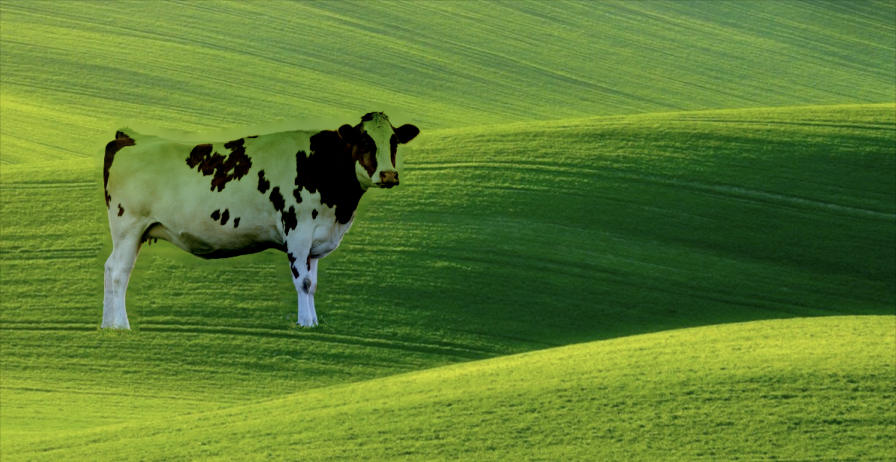
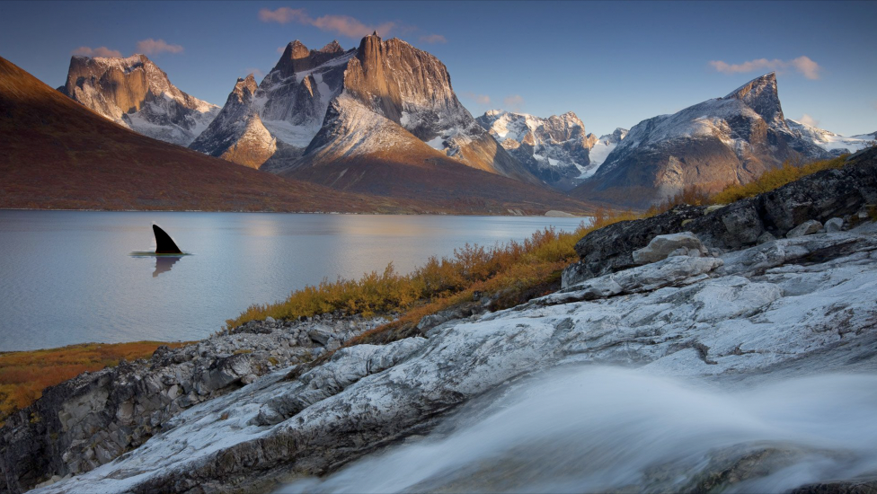
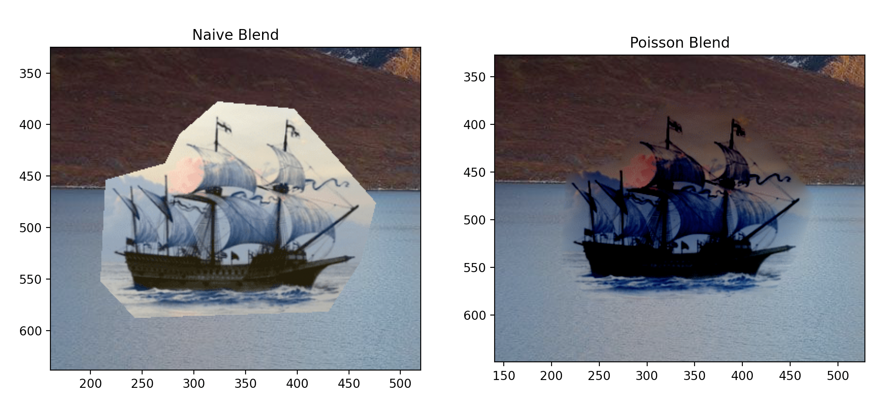

FAILURE CASE: This case fails to preserve the white upper part of the
cow. The source image had a white sky and a green ground. Because of
how the boundary pixels are handled by the blending algorithm, this
results in a green gradient across the cow.

Here we have a shark fin in the water. This result blends well, due to
the similarity of the background colors of the source and target images.

The same target image does not work as well for this ship, due to the
differences in the background of the source image.